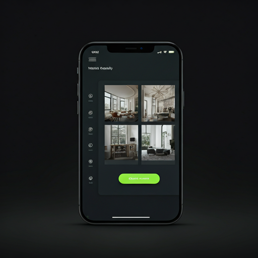
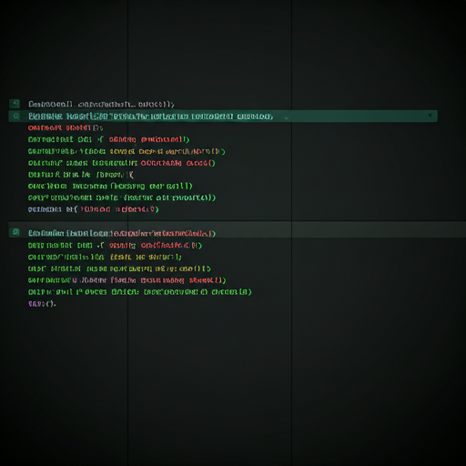

// Financial Systems
Ledgerly
A high-performance double-entry accounting engine designed for high-volume SaaS platforms, ensuring data integrity at scale.
React
Node.js
PostgreSQL
// 03 — selected work
A high-performance double-entry accounting engine designed for high-volume SaaS platforms, ensuring data integrity at scale.
Unified payment gateway abstraction layer supporting 12+ international providers with high-availability gRPC endpoints.

A real-time workspace booking engine featuring interactive floorplans and occupancy sensor integration.

CLI utility for auditing and validating environment variable security across multi-cloud deployments.